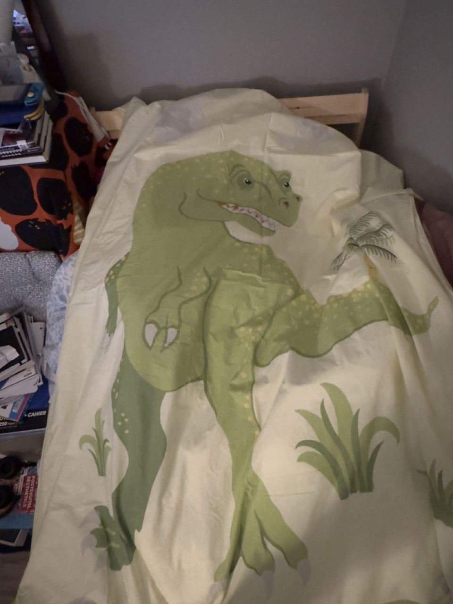
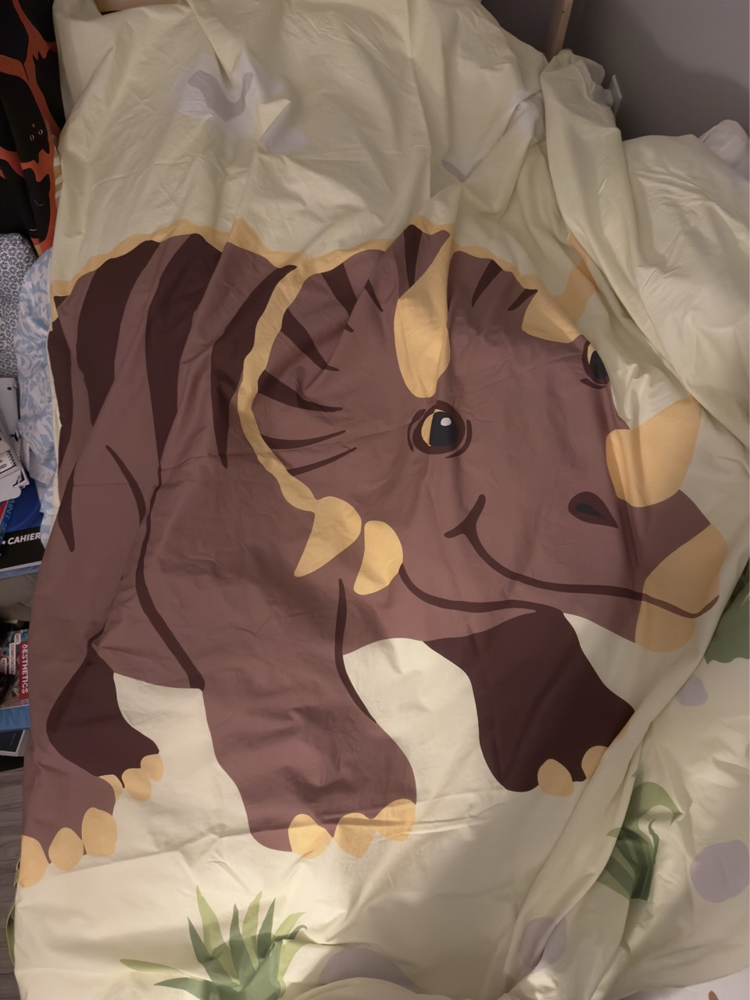
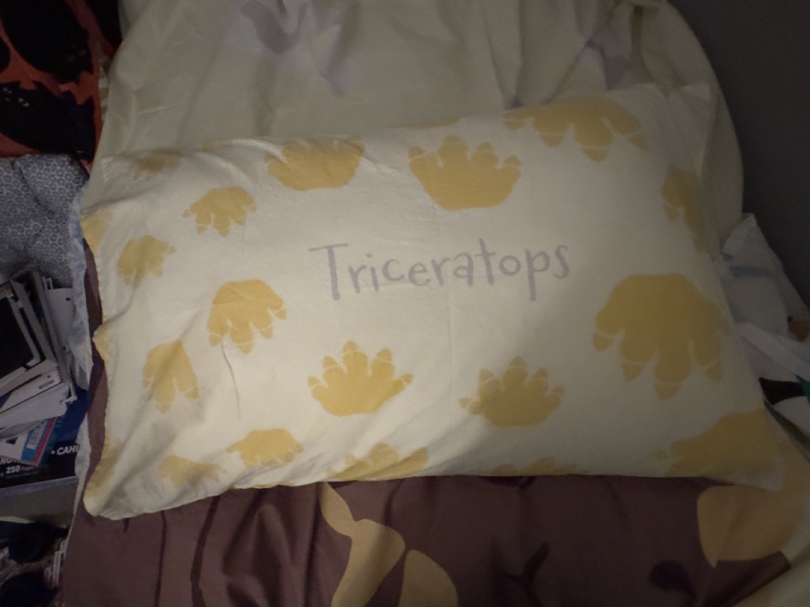
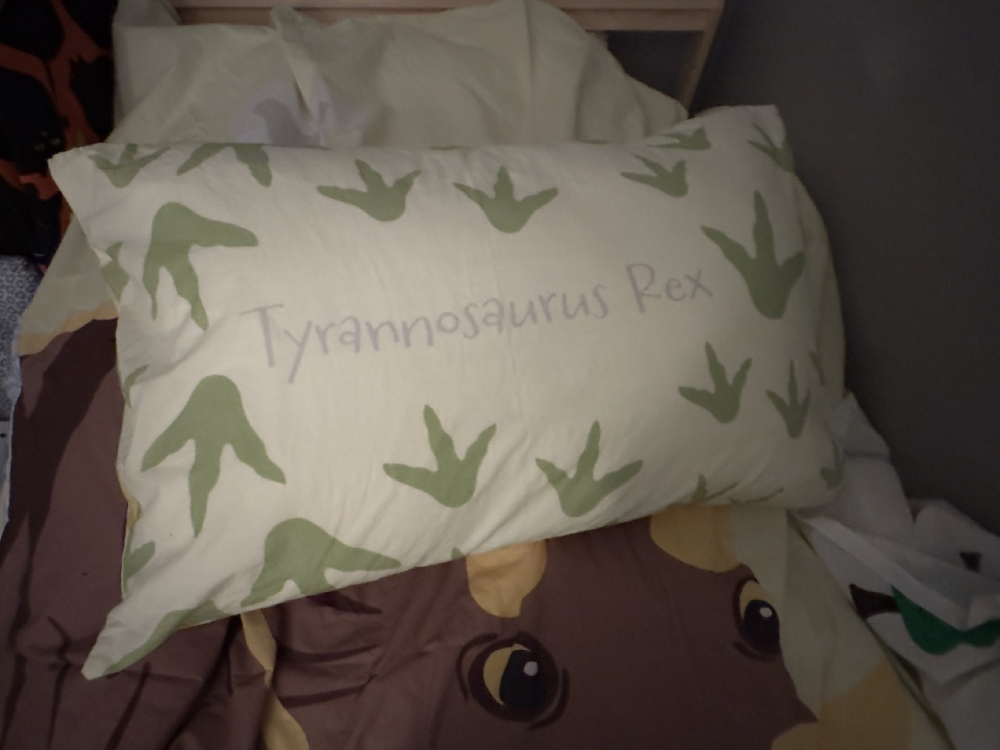

Bedsheets & Smells




I don't like clothes and bedding to smell like me, and sometimes I even get nauseous because of the smell. The line between being intimate and disgusting often is so blurry, not only mentally but also physically and sensually.
There's a thin line between smelling comfortable and smelling disgusted and nauseous to me, even dealing with my own clothes and bedding. Typically, when the fabric is thin/soft to the skin, breathable, and cotton (which is my all-time favorite material to use/wear), they are annoyingly easy to pick up smells from the body.
When moving to a new place, familiar smells and touches from the fabric can be crucial for me to settle down faster (also why I brought the fragment I loved the most, just in case most of the time), but once I get used to and am surrounded by too many of them, it can be too troublesome to the degree that I have to keep or throw them away...therefore, collecting them in digital way is so far the best way I can think of...
Is it such a curse when I truly like something and would want to be accompanied by it?